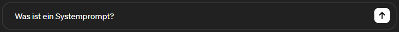

<!DOCTYPE html>
<html lang="en">
  <head>
    <meta charset="utf-8" />
    <meta name="viewport" content="width=device-width, initial-scale=1.0, maximum-scale=1.0, user-scalable=no" />

    <title></title>
    <link rel="stylesheet" href="dist/reveal.css" />
    <link rel="stylesheet" href="dist/theme/night.css" id="theme" />
    <link rel="stylesheet" href="plugin/highlight/monokai.css" />
	<link rel="stylesheet" href="css/layout.css" />
	<link rel="stylesheet" href="plugin/customcontrols/style.css">
	<link rel="stylesheet" href="plugin/chalkboard/style.css">


    <script defer src="dist/fontawesome/all.min.js"></script>

	<script type="text/javascript">
		var forgetPop = true;
		function onPopState(event) {
			if(forgetPop){
				forgetPop = false;
			} else {
				parent.postMessage(event.target.location.href, "app://obsidian.md");
			}
        }
		window.onpopstate = onPopState;
		window.onmessage = event => {
			if(event.data == "reload"){
				window.document.location.reload();
			}
			forgetPop = true;
		}

		function fitElements(){
			const itemsToFit = document.getElementsByClassName('fitText');
			for (const item in itemsToFit) {
				if (Object.hasOwnProperty.call(itemsToFit, item)) {
					var element = itemsToFit[item];
					fitElement(element,1, 1000);
					element.classList.remove('fitText');
				}
			}
		}

		function fitElement(element, start, end){

			let size = (end + start) / 2;
			element.style.fontSize = `${size}px`;

			if(Math.abs(start - end) < 1){
				while(element.scrollHeight > element.offsetHeight){
					size--;
					element.style.fontSize = `${size}px`;
				}
				return;
			}

			if(element.scrollHeight > element.offsetHeight){
				fitElement(element, start, size);
			} else {
				fitElement(element, size, end);
			}		
		}


		document.onreadystatechange = () => {
			fitElements();
			if (document.readyState === 'complete') {
				if (window.location.href.indexOf("?export") != -1){
					parent.postMessage(event.target.location.href, "app://obsidian.md");
				}
				if (window.location.href.indexOf("print-pdf") != -1){
					let stateCheck = setInterval(() => {
						clearInterval(stateCheck);
						window.print();
					}, 250);
				}
			}
	};


        </script>
  </head>
  <body>
    <div class="reveal">
      <div class="slides"><section  data-markdown><script type="text/template"><!-- .slide: class="has-dark-background drop" data-background-color="#001834" -->
<div class="" style="position: absolute; left: 0px; top: 0px; height: 720px; width: 1280px; min-height: 720px; display: flex; flex-direction: column; align-items: start; justify-content: center" absolute="true">

## AI und Softwareentwicklung
<div class="stretch-column" style="font-size: 22px; position: absolute; left: 0%; top: 60%; height: 10%; width: 100%; display: flex; flex-direction: column; align-items: start; justify-content: space-evenly" align="stretch">

by Emil Bohleber
</div>


<div class="" style="position: absolute; left: 0%; top: 90%; height: 10%; width: 20%; display: flex; flex-direction: column; align-items: start; justify-content: center" >


</div>
</div></script></section><section  data-markdown><script type="text/template"><!-- .slide: class="has-dark-background drop" data-background-color="#001834" -->
<div class="" style="position: absolute; left: 0px; top: 0px; height: 720px; width: 1280px; min-height: 720px; display: flex; flex-direction: column; align-items: start; justify-content: center" absolute="true">

### Proompting
### GitHub Copilot
### Entwicklung von AI Anwendungen


<div class="" style="position: absolute; left: 0%; top: 90%; height: 10%; width: 20%; display: flex; flex-direction: column; align-items: start; justify-content: center" >


</div>
</div></script></section><section ><section data-markdown><script type="text/template"><!-- .slide: class="has-dark-background drop" data-background-color="#001834" -->
<div class="" style="position: absolute; left: 0px; top: 0px; height: 720px; width: 1280px; min-height: 720px; display: flex; flex-direction: column; align-items: start; justify-content: center" absolute="true">

# Proompting


<small>manchmal: prompt engineering</small>


<div class="" style="position: absolute; left: 0%; top: 90%; height: 10%; width: 20%; display: flex; flex-direction: column; align-items: start; justify-content: center" >


</div>
</div></script></section><section data-markdown><script type="text/template"><!-- .slide: class="has-dark-background drop" data-background-color="#001834" -->
<div class="" style="position: absolute; left: 0px; top: 0px; height: 720px; width: 1280px; min-height: 720px; display: flex; flex-direction: column; align-items: start; justify-content: center" absolute="true">

### Was ist Prompt? <!-- .element: style="position: absolute; left: 0%; top: 0%; height: 10%; width: 100%; display: flex; flex-direction: column; align-items: start; justify-content: center" -->


<div class="" style="position: absolute; left: 0%; top: 10%; height: 50%; width: 100%; display: flex; flex-direction: column; align-items: start; justify-content: space-evenly" align="left">

User Prompt: 




System Prompt:

>"You are ChatGPT, a large language model trained by OpenAI, based on the GPT-4 architecture. You are chatting with the user via the ChatGPT Android app. This means most of the time your lines should be a sentence or two, unless the user's request requires reasoning or long-form outputs. Never use emojis, unless explicitly asked to. Never use LaTeX formatting in your responses, use only basic markdown. {...}" <!-- .element: style="font-size: 18px" -->

Final Prompt = System Prompt + User Prompt

</div>


<div class="" style="position: absolute; left: 0%; top: 90%; height: 10%; width: 20%; display: flex; flex-direction: column; align-items: start; justify-content: center" >


</div>
</div></script></section><section data-markdown><script type="text/template"><!-- .slide: class="has-dark-background drop" data-background-color="#001834" -->
<div class="" style="position: absolute; left: 0px; top: 0px; height: 720px; width: 1280px; min-height: 720px; display: flex; flex-direction: column; align-items: start; justify-content: center" absolute="true">

### Demo
<small>Custom System Prompts</small>


<div class="" style="position: absolute; left: 0%; top: 90%; height: 10%; width: 20%; display: flex; flex-direction: column; align-items: start; justify-content: center" >


</div>
</div></script></section><section data-markdown><script type="text/template"><!-- .slide: class="has-dark-background drop" data-background-color="#001834" -->
<div class="" style="position: absolute; left: 0px; top: 0px; height: 720px; width: 1280px; min-height: 720px; display: flex; flex-direction: column; align-items: start; justify-content: center" absolute="true">

Mehr Beispiele: https://github.com/mustvlad/ChatGPT-System-Prompts


<div class="" style="position: absolute; left: 0%; top: 90%; height: 10%; width: 20%; display: flex; flex-direction: column; align-items: start; justify-content: center" >


</div>
</div></script></section><section data-markdown><script type="text/template"><!-- .slide: class="has-dark-background drop" data-background-color="#001834" -->
<div class="" style="position: absolute; left: 0px; top: 0px; height: 720px; width: 1280px; min-height: 720px; display: flex; flex-direction: column; align-items: start; justify-content: center" absolute="true">

### Wozu ist das gut? <!-- .element: style="position: absolute; left: 0%; top: 0%; height: 10%; width: 100%; display: flex; flex-direction: column; align-items: start; justify-content: center" -->

<div class="" style="position: absolute; left: 0%; top: 15%; height: 100%; width: 50%; display: flex; flex-direction: column; align-items: start; justify-content: flex-start" align="left">

- Generierung von 
	- Testdaten
	- Code
	- Dokumentation
	- Inhalten
- Verstehen von fremden Code
- Optimierung von Code
</div>

<iframe src="https://giphy.com/embed/ckJF143W1gBS8Hk833" width="480" height="363" frameBorder="0" class="giphy-embed" allowFullScreen></iframe> <!-- .element: style="position: absolute; left: 50%; top: undefined%; height: 100%; width: 50%; display: flex; flex-direction: column; align-items: start; justify-content: center" -->


<div class="" style="position: absolute; left: 0%; top: 90%; height: 10%; width: 20%; display: flex; flex-direction: column; align-items: start; justify-content: center" >


</div>
</div></script></section><section data-markdown><script type="text/template"><!-- .slide: class="has-dark-background drop" data-background-color="#001834" -->
<div class="" style="position: absolute; left: 0px; top: 0px; height: 720px; width: 1280px; min-height: 720px; display: flex; flex-direction: column; align-items: start; justify-content: center" absolute="true">

### Was ist nicht so gut? <!-- .element: style="position: absolute; left: 0%; top: 0%; height: 10%; width: 100%; display: flex; flex-direction: column; align-items: start; justify-content: center" -->

<div class="" style="position: absolute; left: 0%; top: 15%; height: 100%; width: 50%; display: flex; flex-direction: column; align-items: start; justify-content: flex-start" align="left">

- Nie das selbe Ergebnis
- Keine ganze App möglich
- Nerviges hin- und her Kopieren
</div>

**Es gibt aber was besseres!** <!-- .element: style="position: absolute; left: 0%; top: 60%; height: 100%; width: 50%; display: flex; flex-direction: column; align-items: start; justify-content: flex-start" align="left" -->

<iframe src="https://giphy.com/embed/kE6xCyOOHoxlS" width="480" height="270" frameBorder="0" class="giphy-embed" allowFullScreen></iframe> <!-- .element: style="position: absolute; left: 50%; top: undefined%; height: 100%; width: 50%; display: flex; flex-direction: column; align-items: start; justify-content: center" -->


<div class="" style="position: absolute; left: 0%; top: 90%; height: 10%; width: 20%; display: flex; flex-direction: column; align-items: start; justify-content: center" >


</div>
</div></script></section></section><section ><section data-markdown><script type="text/template"><!-- .slide: class="has-dark-background drop" data-background-color="#001834" -->
<div class="" style="position: absolute; left: 0px; top: 0px; height: 720px; width: 1280px; min-height: 720px; display: flex; flex-direction: column; align-items: start; justify-content: center" absolute="true">

# Github Copilot
<small>
...nicht zu verwechseln mit Microsoft Copilot for Azure, Microsoft Copilot for Finance,  Microsoft Copilot for Microsoft 365, Microsoft Copilot for Sales, Microsoft Copilot for Service, Microsoft Copilot Studio, Microsoft Copilot for Security, 
</small>


<div class="" style="position: absolute; left: 0%; top: 90%; height: 10%; width: 20%; display: flex; flex-direction: column; align-items: start; justify-content: center" >


</div>
</div></script></section><section data-markdown><script type="text/template"><!-- .slide: class="has-dark-background drop" data-background-color="#001834" -->
<div class="" style="position: absolute; left: 0px; top: 0px; height: 720px; width: 1280px; min-height: 720px; display: flex; flex-direction: column; align-items: start; justify-content: center" absolute="true">

<div class="callout callout-color7">
<div class="callout-title">
<div class="callout-icon">

<i class="fas fa-bolt" ></i>


</div>
<div class="callout-title-inner">

Copilot

</div>
</div>
<div class="callout-content">

GitHub Copilot ist ein von GitHub und OpenAI entwickeltes Code-Vervollständigungstool, das Benutzer {...} durch automatische Vervollständigung von Code unterstützt.

</div>
</div>


<div class="" style="position: absolute; left: 0%; top: 90%; height: 10%; width: 20%; display: flex; flex-direction: column; align-items: start; justify-content: center" >


</div>
</div></script></section><section data-markdown><script type="text/template"><!-- .slide: class="has-dark-background drop" data-background-color="#001834" -->
<div class="" style="position: absolute; left: 0px; top: 0px; height: 720px; width: 1280px; min-height: 720px; display: flex; flex-direction: column; align-items: start; justify-content: center" absolute="true">


<div class="" style="position: absolute; left: 0%; top: 90%; height: 10%; width: 20%; display: flex; flex-direction: column; align-items: start; justify-content: center" >


</div>
</div></script></section><section data-markdown><script type="text/template"><!-- .slide: class="has-dark-background drop" data-background-color="#001834" -->
<div class="" style="position: absolute; left: 0px; top: 0px; height: 720px; width: 1280px; min-height: 720px; display: flex; flex-direction: column; align-items: start; justify-content: center" absolute="true">

# Demo


<div class="" style="position: absolute; left: 0%; top: 90%; height: 10%; width: 20%; display: flex; flex-direction: column; align-items: start; justify-content: center" >


</div>
</div></script></section><section data-markdown><script type="text/template"><!-- .slide: class="has-dark-background drop" data-background-color="#001834" -->
<div class="" style="position: absolute; left: 0px; top: 0px; height: 720px; width: 1280px; min-height: 720px; display: flex; flex-direction: column; align-items: start; justify-content: center" absolute="true">

### Brauchen also nicht mehr coden? <!-- .element: style="position: absolute; left: 0%; top: 0%; height: 10%; width: 100%; display: flex; flex-direction: column; align-items: start; justify-content: center" -->

Jup 😉  <!-- .element: style="position: absolute; left: 45%; top: 75%; height: 100%; width: 50%; display: flex; flex-direction: column; align-items: start; justify-content: flex-start" align="left" -->

<iframe src="https://giphy.com/embed/26tPcgtbhhbU88U2A" width="480" height="270" frameBorder="0" class="giphy-embed" allowFullScreen></iframe> <!-- .element: style="position: absolute; left: 25%; top: -10%; height: 100%; width: 50%; display: flex; flex-direction: column; align-items: start; justify-content: flex-start" align="left" -->


<div class="" style="position: absolute; left: 0%; top: 90%; height: 10%; width: 20%; display: flex; flex-direction: column; align-items: start; justify-content: center" >


</div>
</div></script></section></section><section ><section data-markdown><script type="text/template"><!-- .slide: class="has-dark-background drop" data-background-color="#001834" -->
<div class="" style="position: absolute; left: 0px; top: 0px; height: 720px; width: 1280px; min-height: 720px; display: flex; flex-direction: column; align-items: start; justify-content: center" absolute="true">

## Entwicklung von AI Anwendungen


<div class="" style="position: absolute; left: 0%; top: 90%; height: 10%; width: 20%; display: flex; flex-direction: column; align-items: start; justify-content: center" >


</div>
</div></script></section><section data-markdown><script type="text/template"><!-- .slide: class="has-dark-background drop" data-background-color="#001834" -->
<div class="" style="position: absolute; left: 0px; top: 0px; height: 720px; width: 1280px; min-height: 720px; display: flex; flex-direction: column; align-items: start; justify-content: center" absolute="true">

### Begriffe <!-- .element: style="position: absolute; left: 0%; top: 0%; height: 10%; width: 100%; display: flex; flex-direction: column; align-items: start; justify-content: center" -->

<div class="callout callout-color2">
<div class="callout-title">
<div class="callout-icon">

<i class="fas fa-fire-alt" ></i>


</div>
<div class="callout-title-inner">

Token

</div>
</div>
<div class="callout-content">


</div>
</div>
<!-- .element: style="width: 40%; font-size: 24px; transform: rotate(-15deg)" -->

<div class="" style="position: absolute; left: 50%; top: 10%; height: 40%; width: 80%; display: flex; flex-direction: column; align-items: start; justify-content: center" >

<div class="callout callout-color2">
<div class="callout-title">
<div class="callout-icon">

<i class="fas fa-fire-alt" ></i>


</div>
<div class="callout-title-inner">

Embedding

</div>
</div>
<div class="callout-content">

Mathematische Darstellung der Bedeutung eines Textausschnitts.

</div>
</div>
<!-- .element: style="width: 40%; font-size: 24px; transform: rotate(15deg)" -->
</div>

<div class="" style="position: absolute; left: 50%; top: 60%; height: 40%; width: 80%; display: flex; flex-direction: column; align-items: start; justify-content: center" >

<div class="callout callout-color2">
<div class="callout-title">
<div class="callout-icon">

<i class="fas fa-fire-alt" ></i>


</div>
<div class="callout-title-inner">

RAG

</div>
</div>
<div class="callout-content">

Retrieval Augumented Generation - Infos holen, Antworten mit dem Kontext generieren

</div>
</div>
<!-- .element: style="width: 60%; font-size: 24px" -->
</div>


<div class="" style="position: absolute; left: 0%; top: 90%; height: 10%; width: 20%; display: flex; flex-direction: column; align-items: start; justify-content: center" >


</div>
</div></script></section><section data-markdown><script type="text/template"><!-- .slide: class="has-dark-background drop" data-background-color="#001834" -->
<div class="" style="position: absolute; left: 0px; top: 0px; height: 720px; width: 1280px; min-height: 720px; display: flex; flex-direction: column; align-items: start; justify-content: center" absolute="true">

### Wie RAG funktioniert <!-- .element: style="position: absolute; left: 0%; top: 0%; height: 10%; width: 100%; display: flex; flex-direction: column; align-items: start; justify-content: center" -->


<div class="" style="position: absolute; left: 0%; top: 90%; height: 10%; width: 20%; display: flex; flex-direction: column; align-items: start; justify-content: center" >


</div>
</div></script></section><section data-markdown><script type="text/template"><!-- .slide: class="has-dark-background drop" data-background-color="#001834" -->
<div class="" style="position: absolute; left: 0px; top: 0px; height: 720px; width: 1280px; min-height: 720px; display: flex; flex-direction: column; align-items: start; justify-content: center" absolute="true">

# Demo


<div class="" style="position: absolute; left: 0%; top: 90%; height: 10%; width: 20%; display: flex; flex-direction: column; align-items: start; justify-content: center" >


</div>

<small>Emotional Support Taylor Swift</small>


<div class="" style="position: absolute; left: 0%; top: 90%; height: 10%; width: 20%; display: flex; flex-direction: column; align-items: start; justify-content: center" >


</div>
</div></script></section></section><section  data-markdown><script type="text/template"><!-- .slide: class="has-dark-background drop" data-background-color="#001834" -->
<div class="" style="position: absolute; left: 0px; top: 0px; height: 720px; width: 1280px; min-height: 720px; display: flex; flex-direction: column; align-items: start; justify-content: center" absolute="true">

# Danke
Besuch mein GitHub: https://github.com/limered

<div class="" style="position: absolute; left: 0%; top: 90%; height: 10%; width: 20%; display: flex; flex-direction: column; align-items: start; justify-content: center" >


</div>
</div></script></section></div>
    </div>

    <script src="dist/reveal.js"></script>

    <script src="plugin/markdown/markdown.js"></script>
    <script src="plugin/highlight/highlight.js"></script>
    <script src="plugin/zoom/zoom.js"></script>
    <script src="plugin/notes/notes.js"></script>
    <script src="plugin/math/math.js"></script>
	<script src="plugin/mermaid/mermaid.js"></script>
	<script src="plugin/chart/chart.min.js"></script>
	<script src="plugin/chart/plugin.js"></script>
	<script src="plugin/customcontrols/plugin.js"></script>
	<script src="plugin/chalkboard/plugin.js"></script>

    <script>
      function extend() {
        var target = {};
        for (var i = 0; i < arguments.length; i++) {
          var source = arguments[i];
          for (var key in source) {
            if (source.hasOwnProperty(key)) {
              target[key] = source[key];
            }
          }
        }
        return target;
      }

	  function isLight(color) {
		let hex = color.replace('#', '');

		// convert #fff => #ffffff
		if(hex.length == 3){
			hex = `${hex[0]}${hex[0]}${hex[1]}${hex[1]}${hex[2]}${hex[2]}`;
		}

		const c_r = parseInt(hex.substr(0, 2), 16);
		const c_g = parseInt(hex.substr(2, 2), 16);
		const c_b = parseInt(hex.substr(4, 2), 16);
		const brightness = ((c_r * 299) + (c_g * 587) + (c_b * 114)) / 1000;
		return brightness > 155;
	}

	var bgColor = getComputedStyle(document.documentElement).getPropertyValue('--r-background-color').trim();
	var isLight = isLight(bgColor);

	if(isLight){
		document.body.classList.add('has-light-background');
	} else {
		document.body.classList.add('has-dark-background');
	}

      // default options to init reveal.js
      var defaultOptions = {
        controls: true,
        progress: true,
        history: true,
        center: true,
        transition: 'default', // none/fade/slide/convex/concave/zoom
        plugins: [
          RevealMarkdown,
          RevealHighlight,
          RevealZoom,
          RevealNotes,
          RevealMath.MathJax3,
		  RevealMermaid,
		  RevealChart,
		  RevealCustomControls,
		  RevealChalkboard, 
        ],


    	allottedTime: 120 * 1000,

		mathjax3: {
			mathjax: 'plugin/math/mathjax/tex-mml-chtml.js',
		},
		markdown: {
		  gfm: true,
		  mangle: true,
		  pedantic: false,
		  smartLists: false,
		  smartypants: false,
		},

		mermaid: {
			theme: isLight ? 'default' : 'dark',
		},

		customcontrols: {
			controls: [
				{ icon: '<i class="fa fa-pen-square"></i>',
				title: 'Toggle chalkboard (B)',
				action: 'RevealChalkboard.toggleChalkboard();'
				},
				{ icon: '<i class="fa fa-pen"></i>',
				title: 'Toggle notes canvas (C)',
				action: 'RevealChalkboard.toggleNotesCanvas();'
				},
			]
		},
      };

      // options from URL query string
      var queryOptions = Reveal().getQueryHash() || {};

      var options = extend(defaultOptions, {"width":1280,"height":720,"margin":0.04,"controls":true,"progress":true,"slideNumber":true,"center":false,"transition":"slide","transitionSpeed":"slow"}, queryOptions);
    </script>

    <script>
      Reveal.initialize(options);
    </script>
  </body>

  <!-- created with Advanced Slides -->
</html>
